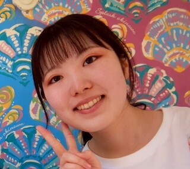

About Me
Hi everyone! I'm from Osaka, Japan. Please call me Uran.
Although I am a tech student now, I have over 4 years of professional experience as a Systems Engineer in Japan, holding multiple advanced certifications, including Java Gold. I graduated from Ryukoku University in Kyoto, and during my university days, I studied abroad in Vancouver, Canada.
I love traveling and experiencing new things, and my ultimate goal is to explore the world. I came to Seattle to utilize the OPT program to gain professional experience in an English-speaking country, which will help me advance my career globally.
In my free time, I enjoy watching action/battle anime, movies, and listening to music. I look forward to connecting with you all!